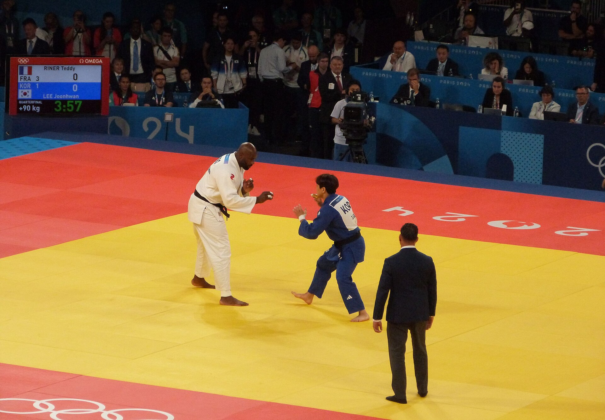

Teddy Riner participe à ses premiers Jeux olympiques en 2008. Il gagne alors une médaille de bronze à Pékin.
Il devient champion olympique en individuel à Londres en 2012, à Rio en 2016 et à Paris en 2024.
À Londres puis à Rio, il remporte deux fois de suite la médaille d'or dans la catégorie des plus de 100 kg.
Il gagne le bronze en individuel. Il remporte ensuite l'or dans l'épreuve par équipes mixtes avec la France.
Devant le public français, il gagne l'or en individuel. Il remporte aussi le titre par équipes mixtes.
Médailles d'or
Médailles de bronze
Médailles au total